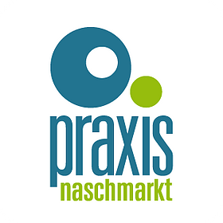
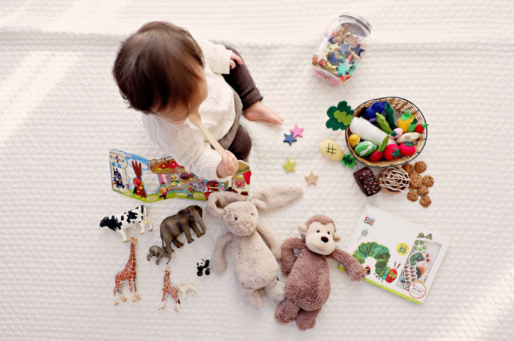

Termin anfragenFür Babys, Kinder und Erwachsene: acht Therapeutinnen unter einem Dach – Physiotherapie, Osteopathie, Ergotherapie, Orthoptik und Legasthenie-Training im 5. Bezirk.
Anmeldung direkt bei Ihrer Therapeutin – alle Kontakte auf einen Blick.
